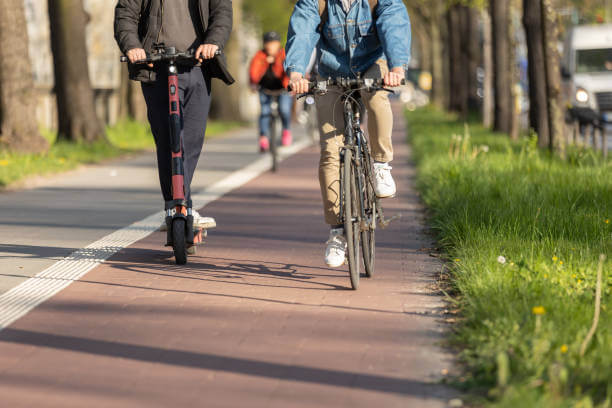
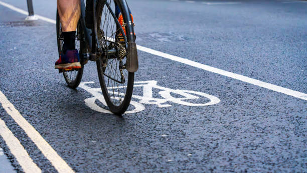
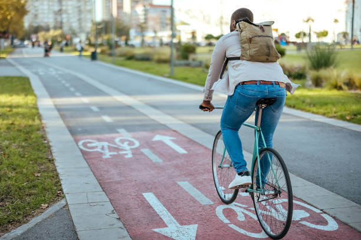

ViteButNotTooMuch – Le cyclisme à votre rythme
Roulez plus librement, vivez mieux
ViteButNotTooMuch est une approche du cyclisme basée sur le plaisir et l'équilibre. Que vous soyez débutant ou confirmé, nous vous aidons à pratiquer le vélo avec passion, sans pression.
 DécouvrirPourquoi choisir ViteButNotTooMuch ?
Parce que rouler vite, c’est bien… mais pas trop. ViteButNotTooMuch vous aide à trouver le bon rythme, celui qui respecte votre corps, vos envies et vos objectifs.
 DécouvrirRejoignez notre communauté cycliste
Des parcours personnalisés, des événements, et une ambiance conviviale. Avec ViteButNotTooMuch, vous n'êtes jamais seul sur la route.
 Découvrir